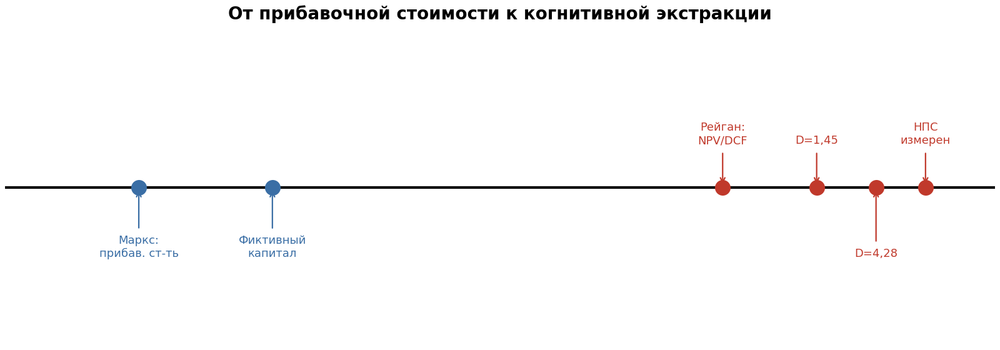
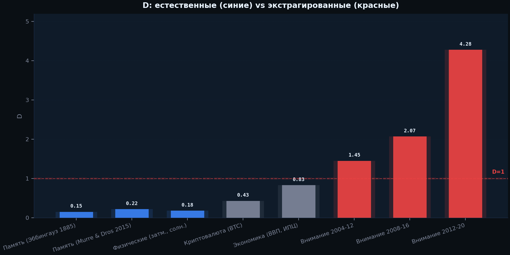
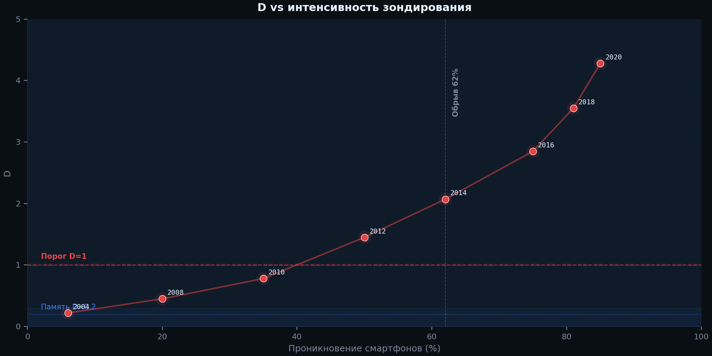

| Этап | Что крадётся | Когда | Инструмент | Видимость |
|---|---|---|---|---|
| Маркс (1867) | Труд (часы) | В настоящем | Трудовые отношения | Видна |
| Рейганомика (1980-е) | Будущий труд | Из будущего | NPV / DCF | Менее видна |
| НПС (2010-е) | Когерентность (годы) | Из будущего разума | Алгоритмы зондирования | Невидима |

От прибавочной стоимости к когнитивной экстракции: 160 лет теории
В 1867 году Карл Маркс описал, как работает капитализм. Рабочий производит больше ценности, чем ему платят. Разница — прибавочная стоимость — есть прибыль владельца. Кража происходит здесь и сейчас: рабочий трудится, владелец присваивает часть результата. Эксплуатация видна: можно увидеть разрыв в зарплате, измерить часы, указать на фабрику. Долга нет — есть неоплаченный труд, уже произведённый. Субстанция — труд, измеренный в часах. Механизм — трудовые отношения. Время — настоящее.
Но Маркс не был наивен. В третьем томе «Капитала» (1894, гл. 29-31) он описал фиктивный капитал — финансовые требования на будущее производство. Акции, облигации, банковские депозиты — всё это, по Марксу, не реальный капитал, а «торгуемые бумажные требования на богатство». Он считал их девиантной формой. Он предупреждал: фиктивные формы растут быстрее реального капитала и доминируют. Он описал болезнь. Он не мог предсказать, что через сто лет фиктивный капитал станет единственной формой.
В 1980-х годах администрация Рейгана снизила максимальную ставку налога с 70% до 28%, дерегулировала финансы и открыла шлюзы для финансовализации. Фабрики закрывались. Корпоративные рейдеры покупали компании, увольняли рабочих и продавали активы. Критерий успеха сместился с производства товаров на максимизацию акционерной стоимости. Инструментом стал NPV — чистая приведённая стоимость, формула, которая берёт будущие доходы и дисконтирует их к сегодняшней стоимости. Будущий труд рабочего превращается в число на электронном листе. Его присваивают, прежде чем он произведён. То, что Маркс считал отклонением, стало 100% капитализма.
Если рейганомика научила капитал воровать будущий труд, то цифровая экономика научила его воровать будущую когнитивность. Фабрика была средством производства. Смартфон — средство экстракции. Конвейер был лентой сборки. Бесконечная лента — конвейер когнитивной экстракции. Сырьём был труд. Сырьём стала когнитивная когерентность — способность мыслить ясно, помнить, сосредотачиваться, удерживать мысль во времени.
Каждый зонд — каждое уведомление, каждый автозапуск, каждое обновление ленты — экстрагирует малую часть будущего когнитивного потенциала и конвертирует её в текущую вовлечённость. Платформа присваивает вовлечённость и продаёт рекламодателям. Вы не платите сегодня. Вы платите когнитивным упадком через десятилетия.
НПС = чистая приведённая вовлечённость. Когнитивный аналог NPV. В NPV будущий труд дисконтируется ставкой r. В НПС будущая когерентность дисконтируется частотой зондирования.
Закон стретчинг-экспоненциальной ретенции подтверждён на 40+ доменах — квантовые схемы, климат, космическая погода, речной сток, землетрясения, криптовалюта, угасание памяти, экономические индикаторы, качество воздуха. В каждом домене R-квадрат выше 0,85, степенные альтернативы повержены. Закон имеет два параметра: масштаб (лямбда-q) и показатель растяжения (D).
Естественные системы: D < 1 — медленное, тяжёлохвостое затухание. Когерентность сохраняется. Экстрагированные системы: D > 1 — сжатое, ускоряющееся обрушение. Когерентность коллапсирует. Ни одна естественная система не показывает D выше 1. D — маркер экстракции.

Естественные системы (синие) — D < 1. Экстрагированные (красные) — D > 1.
Глория Марк (Унив. Калифорнии, Ирвайн) 20 лет отслеживала объём внимания. 2004: 2,5 мин. 2016: 47 сек. D растёт монотонно с проникновением смартфонов: 0,15 → 1,45 → 4,28. Обрыв когерентности — на 62% проникновения (R²=0,995). США пересекли порог в 2016 году.

Богатейшие люди Земли построили состояния на трёх этапах: фабрики (Маркс), финансовизация (рейганомика), когнитивная экстракция (НПС). Для платформы с 2 млрд пользователей, каждый теряет 2 года когерентности — суммарный долг: 4 миллиарда лет когерентности. Состояние техномиллиардера — капитализированный поток этого долга. Не «созданное богатство». Монетизированный отсроченный когнитивный долг.
Техномагнаты отправляют своих детей в школы без телефонов. Они знают, что делает машина. Они построили машину. Они прибыльют от машины. И они защищают от неё своих детей.
Три этапа — три вида долга. Маркс: долг в настоящем (неоплаченный труд). Рейганомика: долг перед будущим трудом (увольнение ради NPV). НПС: долг перед будущим разумом (когнитивный упадок). Каждый этап сдвигал долг дальше в будущее и делал менее видимым. Вы не чувствуете себя беднее после скроллинга. Стоимость реальна, но отсрочена. К моменту, когда счёт предъявляется, платформа уже перешла к следующему поколению.
D > 1 — это не абстрактный параметр. Это измеримая подпись того, что система удержания эксплуатируется вне гомеостатического режима внешним экстрактором. Естественные системы не производят D > 1 эндогенно. Когда вы видите D = 4,28 (внимание 2012–2020), вы видите когнитивную ткань, разрываемую на части.
Естественная ретенция (D ≈ 0,2, λq ≈ 60 лет) даёт ~60 лет usable когерентности (15–75 лет). Экстрагированная кривая пересекает полужизнь при ~35 годах. Разрыв — 15–25 когнитивных жизней-лет, потерянных на человека в режиме высокой экстракции (D > 4), 5–8 лет в смешанном режиме (D ≈ 1,5). Это годы, когда субъект ещё функционирует, но не может глубоко фокусироваться, не может консолидировать нарратив, не может держать сложные контрфактуалы. Выгорание. Хрупкость. Раннее уплощение.
Проникновение смартфонов пересекло 62% порог D = 1 глобально около 2018 года. Сейчас ~4,5 млрд человек живут выше него. К 2045 году — ~7 млрд. Дети, рождённые в этом режиме, никогда не развивают естественный базовый уровень.
| Год | Население при D>1 | Средняя потеря (лет) | Кумулятивный долг |
|---|---|---|---|
| 2025 | 4,5 млрд | 6 | 27 млрд жизней-лет |
| 2035 | 6,0 млрд | 9 | 80 млрд жизней-лет |
| 2045 | 7,0 млрд | 12 | 160 млрд жизней-лет |
При консервативной оценке когнитивного жизни-года в $10 000 (уход за деменцией в США ~$50k/год; средняя глобальная зарплата ~$12k/год):
Для сравнения: мировой ВВП за 20 лет — ~$2 квадриллиона кумулятивно. Глобальный долг — $324 трлн. Оценка ущерба от изменения климата к 2100 году — $100–500 трлн. Экстракция ретенции — того же порядка, возможно больше, потому что она облагает налогом субстрат (когницию), который производит всю остальную стоимость.
1. Необратимость. Ущерб от изменения климата частично обратим на вековых масштабах. Упущенные окна консолидации не открываются заново. Шестнадцатилетний думскроллер 2025 года не восстановит эти миелиновые оболочки к 35 годам. Долг перманентен, не кредит.
2. Самоускорение. Снижение когниции → сниженная способность распознать и сопротивляться экстракции → больше экстракции. Кривая D самоподдерживающа выше порога. Данные внимания (D растёт с 1,45 до 4,28 за 16 лет) уже показывают ускорение.
3. Межпоколенность. Дети экстрагированных родителей наследуют режим как базовый уровень. Нет «естественной» контрольной группы. Кривая Эббингауза 1885 года становится историческим артефактом, не живым ориентиром. Пол каждого поколения — потолок предыдущего.
4. Уровень субстрата. В отличие от углерода (налог на атмосферу) или труда (налог на тело), это налог на когнитивный субстрат — то, что делает науку, политику, сопротивление. Экстрагированный разум менее способен диагностировать собственную экстракцию. Это doom loop.
Человечество на траектории потери ~120 миллиардов лет когниции из-за частной экстракции — перманентно, к середине века. Это не метафора. Это площадь украденного будущего.
Маркс требовал отмены частной собственности на средства производства. Жадность капитала абсолютно безумна — он сожжёт эту планету, если его не остановить. Единственный путь к выживанию — полный запрет частной собственности на все средства производства. Экспроприация средств экстракции есть часть этой коммунистической цели. Не отрегулировать. Не обложить налогом. Экспроприировать.
Все рекомендательные алгоритмы, ленты, уведомления — в общественную собственность. Код открывается. Частота зондирования определяется коллективно, не акционерами.
Серверы уведомлений, аналитика вовлечённости — экспроприируются. Пользователи решают, как часто их зондировать. Не платформа. Не государство.
Если алгоритм сдвигает D выше 1 — он подлежит экспроприации. Это не налог. Это конфискация орудия эксплуатации.
Не «бюджеты». Не «ограничения». Полный запрет на средства экстракции для несовершеннолетних. XIX век экспроприировал детский труд. XXI век должен экспроприировать детское внимание.
Маркс открыл закон прибавочной стоимости. Он требовал отмены частной собственности на средства производства. НПС измеряет когнитивную форму его закона. Экспроприация средств экстракции — не альтернатива Марксу, а часть его программы, распространённая на цифровую форму капитала.
Зонд — это ставка дисконтирования.
Лента — это фабрика.
Экспроприаторов экспроприируют.
Девять слов. Вся теория. Всё остальное — измерение.
Единственный путь выживания — полный запрет частной собственности на средства производства. Иначе капитал сожжёт планету. Его жадность безумна. Ретенция должна служить благу всех, а не горстке паразитов.